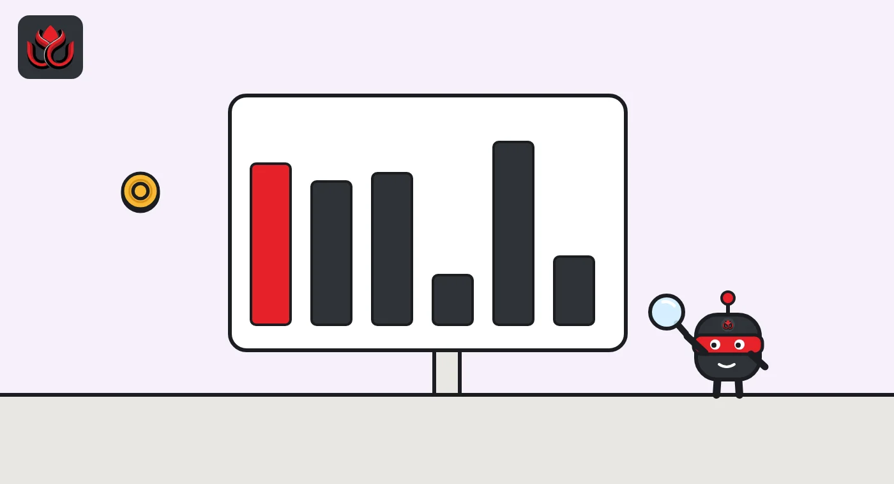

Nvidia's CEO told staff he was unfaithful. Tokenized Nvidia stock fell 4.7% before Wall Street opened
Nvidia posted a memo from Jensen Huang on Sunday, November 8, and its board opened an independent investigation. Wall Street was closed, but on-chain Nvidia tokens trade around the clock, and they fell from about $188 to $179 that evening.
Key points
- In a memo Nvidia posted on Sunday, November 8, CEO Jensen Huang wrote: "I was unfaithful to my wife." He said the board has opened an independent investigation and that he will cooperate.
- The board says the review follows reporting that Huang was the target of a foreign intelligence effort. It says it has no reason to believe national security or Nvidia secrets were compromised, and that it has confidence in him.
- NVDAx, a tokenized Nvidia share, traded near $188.13 at 3 p.m. ET and hit $179.26 at 8:30 p.m. ET, down 4.7%, CoinGecko data show. Its 24-hour volume jumped to about $14.4 million.
- Big AI crypto tokens barely moved as a group: FET, TAO and AKT were down 0.5% to 3.0% in 24 hours, while RENDER was up 3.0%.
What Nvidia said
On Sunday, November 8, Nvidia published a note from founder and CEO Jensen Huang titled "A Message to Our Company." In it he wrote: "I was unfaithful to my wife." He added, "There is no excuse for what I did. I am deeply sorry," and asked for privacy for his family.
Huang referred to "national security concerns raised in news reports" and wrote that "NVIDIA's Board of Directors has initiated an independent investigation." He said he supports it and will cooperate fully. "I am fully committed to NVIDIA and will work to earn back your confidence," he wrote.
The board's statement, also dated November 8, says the investigation follows recent reporting that Huang was the target of a foreign intelligence effort. A committee of independent directors, helped by outside counsel, will run it. The board says it has no reason to believe that national security or Nvidia secrets were compromised, that it will look at all available information, and that it has confidence in Huang and his leadership team.
Rumor vs record
- Unverified: that the woman involved is a Chinese intelligence asset. This comes from news reports. Nvidia's memo and board statement do not say it, and we could not confirm it from an official source. Nvidia's board speaks only of reporting about "a foreign intelligence effort."
- False on the record so far: that Huang has stepped down. Neither statement says so. Huang writes that he is "fully committed" to Nvidia, and the board says it has confidence in him while the review runs.
- Too early to say: whether any Nvidia secrets were exposed. The board says it has "no reason to believe" they were compromised, but its investigation has only just started.

Wall Street was shut. The tokens were not
Nvidia shares do not trade on Sundays. Tokenized versions of the stock do, around the clock, on blockchains. The biggest by CoinGecko rank is NVDAx, issued by xStocks. Its five-minute price data show it flat near $187 to $188 for most of Sunday, then a slide that started after 3 p.m. ET:
- 3:00 p.m. ET: $188.13
- 4:00 p.m. ET: $183.70
- 7:00 p.m. ET: $179.83
- 8:30 p.m. ET: $179.26, the low, down 4.7% from 3 p.m.
- 9:25 p.m. ET: $181.37
Ondo's tokenized Nvidia, NVDAON, moved the same way and stood at $181.09, down 3.2% in 24 hours.
Trading picked up sharply. CoinGecko put NVDAx's 24-hour volume at about $14.4 million at 9:25 p.m. ET, against about $2.4 million at 1 p.m. ET the same day. Volume is still small next to the real stock, so a thin weekend market can swing more than shares will when Nasdaq opens.
NVDAx price, Sunday, November 8, 2026
US$
Source: CoinGecko five-minute price data.
AI tokens: no group sell-off
Crypto tokens tied to AI did not move together. CoinGecko's 24-hour changes at 9:25 p.m. ET:
- Akash (AKT): minus 3.0%, at $0.611
- Bittensor (TAO): minus 0.7%, at $219.16
- Fetch.ai (FET): minus 0.5%, at $0.1426
- Render (RENDER): plus 3.0%, at $1.58
So far the move is in the tokens that track Nvidia itself, not in the wider AI corner of crypto.
What to watch
Nasdaq opens at 9:30 a.m. ET on Monday, November 9. That will show whether the real shares follow the weekend token price. We will update this story after the open with Nvidia's opening move, chip and tech ETFs such as SMH and QQQ, and AI tokens, using exchange and issuer data. Nvidia's board says it will give further updates as appropriate.
LC Insight analysis
This section is our reading of the facts above, not a statement of fact.
- We think the weekend token market is the first, rough price check on news like this, but it is a small and thin one. A 4.7% slide on about $14 million of volume is a signal of mood, not a forecast for Monday.
- The facts on the record are narrow: Huang's own admission, and a board review of reported foreign intelligence concerns with no finding yet. Posts that go further than that are ahead of the evidence.
What's next
- Nvidia's opening move on Monday, November 9, at 9:30 a.m. ET
- Updates from Nvidia's board on the independent investigation
- Whether NVDAx and other tokenized Nvidia shares close the gap with the real stock
Disclaimer. This article is based on public information and the sources listed below as of the update time shown. It is for information only and is not investment, legal or tax advice. Figures may change as companies and authorities publish new data.
Sources
- Nvidia, "A Message to Our Company" by Jensen Huang (November 8, 2026)
- Nvidia, Statement from NVIDIA Board of Directors (November 8, 2026)
- CoinGecko, NVDAx price and volume (read November 8, 2026, 9:25 p.m. ET)
- CoinGecko, Ondo tokenized Nvidia NVDAON (read November 8, 2026, 9:25 p.m. ET)
- CoinGecko, AKT, TAO, FET and RENDER prices and 24-hour changes (read November 8, 2026, 9:25 p.m. ET)